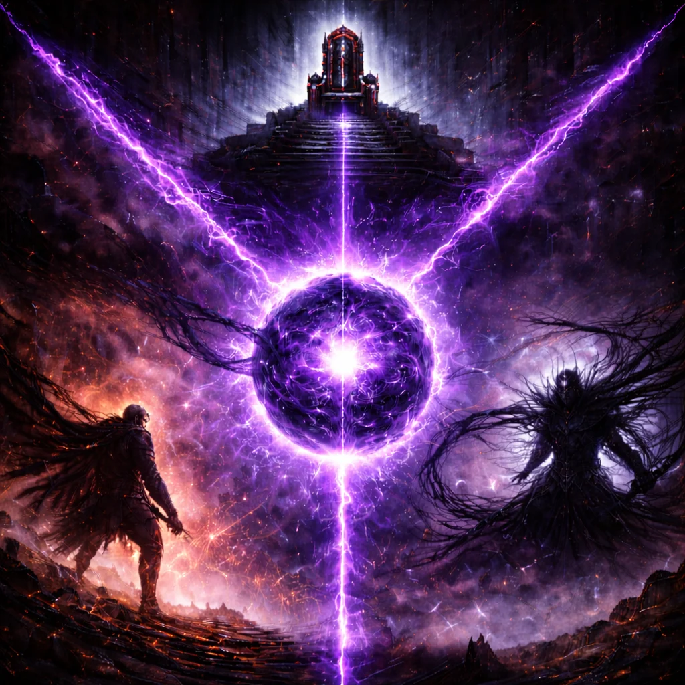

THE NEROMATRIX SAGA
A fractured reality. A hidden war. Humanity on trial.
THE MORTAL MATRIX
A system born from catastrophe. Those who enter are tested not by strength alone, but by will.
 ENTER THE MORTAL MATRIXMATRIX INFO
Recovered fragments explaining how the Matrix functions, why energy replaced weapons, and how humanity survived after the collapse.
 ACCESS MATRIX INFO
ACCESS MATRIX INFO
MATRIX SHOP
Artifacts and relics connected to the Matrix are being prepared. Posters, collectibles, and sigils will be revealed as the system stabilizes.
ENTER MATRIX SHOPSUPPORT US
The Neromatrix Saga is created independently. If you believe in this world and want to see it evolve, you can support the creator directly.
SUPPORT THE CREATOR